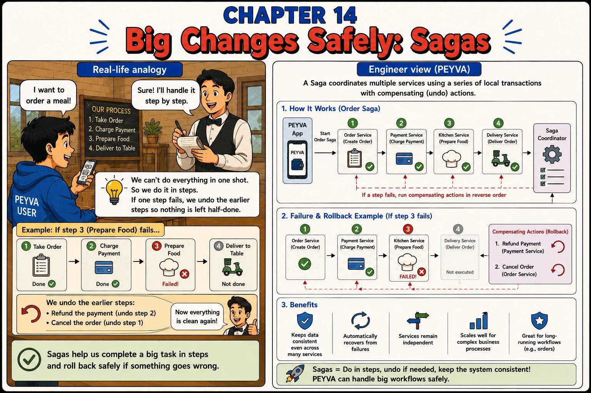

Chapter 14
Big Changes Safely: Sagas
We can't do everything in one shot. So we do it in steps. If one step fails, we undo the earlier steps so nothing is left half-done.

1. Intuition
- A single transaction works when everything lives in one database.
- Once separate services are involved — order, payment, kitchen, delivery — no single BEGIN/COMMIT can span them.
- A saga runs the steps one at a time, and undoes completed steps if a later one fails.
2. Concepts
- Saga — A sequence of local transactions across services, coordinated so the whole workflow either completes or is undone.
- Local Transaction — Each step's own transaction, scoped to its own service and database — not shared with the other steps.
- Compensating Action — The 'undo' for a step that already succeeded, run in reverse order when a later step fails.
- Saga Coordinator — Tracks which steps have completed and triggers compensations if the saga needs to unwind.
3. Under the Hood
- Order Saga: Order Service (Create Order) -> Payment Service (Charge Payment) -> Kitchen Service (Prepare Food) -> Delivery Service (Deliver Order), tracked by a Saga Coordinator.
- If step 3 (Kitchen) fails: run compensating actions in reverse order — refund the payment (undo step 2), cancel the order (undo step 1). Step 4 never executes.
- Sagas keep data consistent across services without a shared transaction.
4. Build It Hands-on
- The Teller learns to run a payment in stages, and to unwind one that fails.
Least-to-Most Prompting — Break the problem into subproblems and solve them in order, each building on the last one's answer. One prompt asking for a whole multi-stage workflow gets you a sketch of all of it and a working version of none.
Documented in The Prompt Report — Decomposition, Least-to-Most
A payment is currently one atomic step. I want the Teller to run payments that span several stages and can unwind if a later stage fails permanently. Build it in four stages. Stop after each and tell me it's working before starting the next — don't write all four at once, and let each one build on what the previous one left behind. 1. A record, per payment reference, of which stages have completed. 2. Wire the existing money movement in as stage one, recording its completion. 3. Wire the Courier handoff in as stage two, recording its completion. 4. A reversal for stage one — put the money back, as a new pair of Ledger entries rather than by deleting the old ones — triggered when stage two fails in a way that can never succeed. Distinguish permanent failures from retryable ones. Only permanent failures reverse. Done when a permanently failing stage two puts the money back, the Ledger shows both the original payment and its reversal, and the payment's record shows every stage it passed through.
5. Break It Test it
- Force a late step to fail and confirm the earlier ones actually get undone.
- Make the notification step fail in a way that can never succeed (e.g. an invalid recipient) and confirm the saga runs its compensation, reversing the transfer.
- Compare this to Chapter 7's transaction: that couldn't span two separate services, but a saga can.
Quick tip: Compensations run in strict reverse order — the last completed step is undone first.